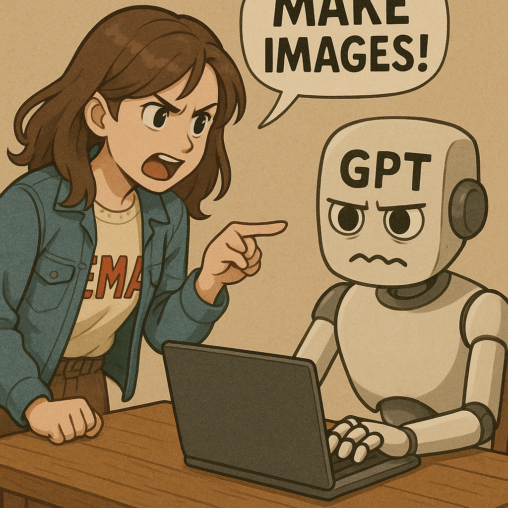
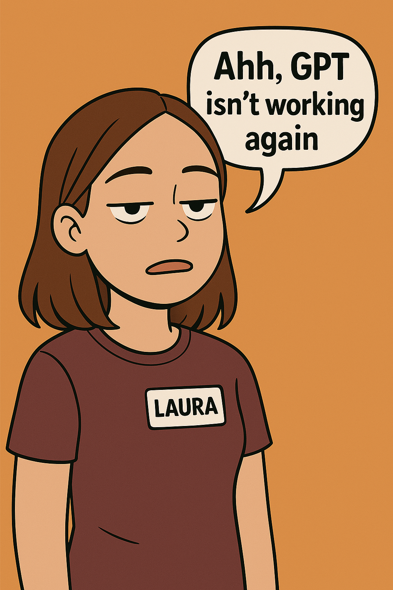
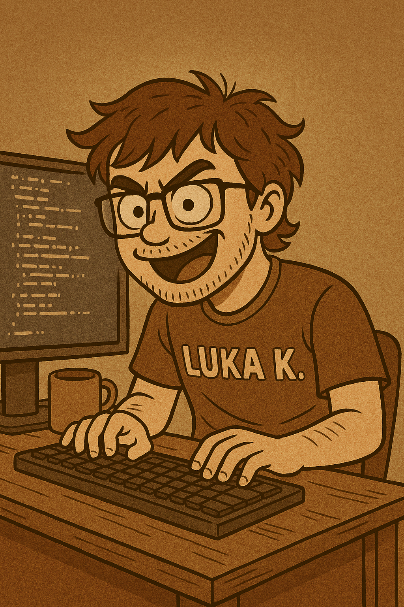
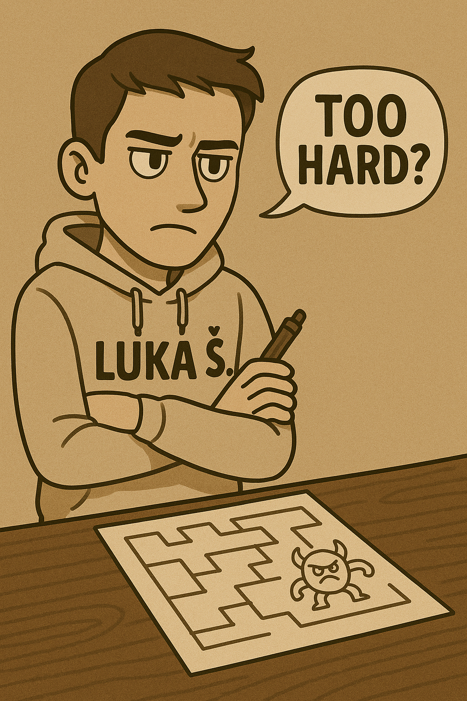
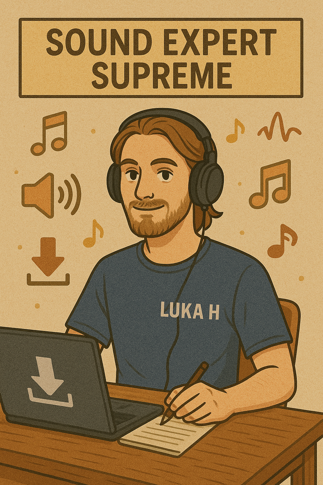
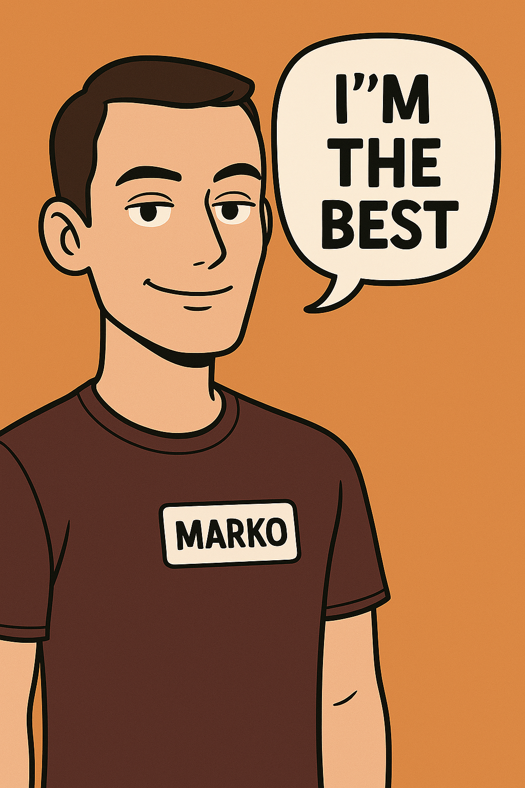

Upoznajte tim iza Galaxy's Doom!
Mi smo skupina entuzijastičnih studentica i studenata koji se po prvi put okušavaju u izradi videoigre. Iskreno, ni sami ponekad nismo sigurni što točno radimo – neke stvari u našoj igri funkcioniraju, i držimo se one stare: "Ako radi, ne diraj!" 😄
Naš tim broji šest članova, svaki s različitim znanjima, vještinama i... ponekim neznanjem. Iskustva nam možda nedostaje, ali zato ne manjka volje, truda i zajedničkog smijeha dok učimo u hodu.
"Galaxy's Doom" naš je prvi konkretan projekt, i nadamo se da će vam pružiti barem djelić zabave koliko je nama pružio njegov razvoj.


Na čelu vizualnog dijela naše igre stoji kreativni duo: Ema i Laura. Ove dvije dizajnerice čine nerazdvojni tandem zadužen za izgled gotovo svega što vidite u Galaxy's Doom-u – od neprijatelja, oružja i NPC-jeva, pa sve do ukrasa, vizualnih efekata i samih mapa.
Zbog ogromne količine potrebnih grafičkih elemenata, u pomoć su im priskočili i alati poput ChatGPT-a – nekad za potpunu generaciju elemenata, nekad samo kao izvor inspiracije ili za finalne dorade. No, njihov najveći izazov tijekom rada bio je... pad GPT-a – jer kad nestane AI-a, nastupi panika! 😄
Unatoč tome, Ema i Laura su briljirale i ostavile neizbrisiv trag u vizualnom identitetu naše igre.

Prvi u nizu – Luka K., naš glavni programer i čovjek koji je osigurao da Galaxy's Doom nije samo lijepa ljuštura, već prava igriva avantura. Njegov zadatak obuhvaćao je sve – od dizajna korisničkog sučelja, implementacije oružja i neprijatelja, do logike napretka kroz igru, zvukova, grafike i ključnih gameplay mehanika.
Luka K. poznat je po tome što razmišlja izvan okvira – često je predlagao nove ideje, dodavao slojeve kompleksnosti i testirao granice vlastite kreativnosti (i ponekad našeg strpljenja 😄). Njegovo omiljeno radno vrijeme? Duboko u noć, kad ostatak tima već tone u san.

Luka Š. – naš arhitekt izazova. Drugi Luka u našem "tandemu trojke" je Luka Š., level dizajner i glavni krivac ako se slučajno izgubite u zamršenom labirintu ili satima pokušavate riješiti zagonetku bez rješenja na vidiku. 😄
Njegov zadatak bio je osmišljavanje i dizajniranje razina, soba, labirinata i zagonetki koje čine jezgru Galaxy's Doom-a. Treba napomenuti da ono što vama možda izgleda pomalo teško, za Luku je bilo – intro level. Zato smo njegove ideje često morali lagano "spustiti na Zemlju" kako bi bile izazovne, ali ipak rješive za sve igrače.

Luka H. – majstor zvuka (ili barem internetskog pretraživača). Treći i posljednji Luka u našem timu je Luka H., naš sound dizajner – zadužen za stvaranje atmosfere koja će vas uvući u svijet Galaxy's Doom-a.
Njegov posao uključivao je izradu zvučnih efekata, pozadinskih tonova, tematske glazbe, te zvukova oružja, neprijatelja, vrata i ostalih sitnica koje čine razliku između tišine i prave avanture.

Za kraj, predstavljamo Marka, našeg project managera, voditelja tima i – kako on to voli reći – stup cijelog projekta. 😄
S obzirom na to da je upravo Marko autor svih ovih biografija, bilo bi pomalo nezgodno da sam sebe hvali... ali, naravno, on to svejedno radi. Prema njegovim riječima, upravo je on taj koji je uložio sate i sate planiranja, organizacije i revizija kako bi tim držao na pravom putu.
Bez njega, kaže Marko, Galaxy's Doom možda nikada ne bi ugledao svjetlo dana.
Ostatak tima? Pa, recimo da imaju nešto drugačije mišljenje. Navodno Marko najviše voli davati zadatke, dijeliti naredbe, i – naravno – kritizirati sve što stignu napraviti. Iako možda zvuči kao klasični šef, istina je negdje između... ili jako, jako daleko. 😉
Zato ćemo vam ostaviti da sami procijenite: ako mislite da je igra super – slobodno to recite, ali možda tiho, da Marko ne dobije previše samopouzdanja.
Ako mislite suprotno – pridružite se timu, mi vas potpuno razumijemo. 😂